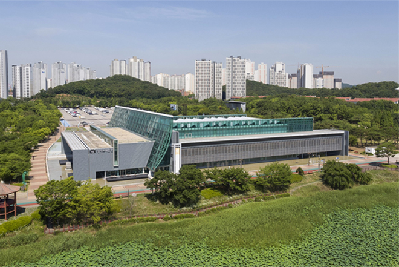

건축소개
- 소개

- 건축소개
경기도미술관은 안산시 화랑유원지 내 평탄한 지형에 위치하여 시각적 개방성이 높고, 호수가 인접한 장소성을 가지고 있다. 평탄한 화랑유원지 주차장을 통해 마주치는 미술관의 서 측은 주차 공간과 기계실 상부를 경사진 녹화 지붕(Bio-Top)으로 조성해 주변의 얕은 녹지 구릉과 통일성을 유지하고 있는데, 이는 주차장에 빼곡하게 들어선 자동차들이 줄 수 있는 시각적 부담을 덜어준다.
건물은 낮은 수평성을 강조하면서도 건물의 조형성과 미술관의 상징적인 표현을 위해 수직적 요소가 더해진 거대한 반투명의 유리벽판(T.P.G)을 사용했다. 동서축으로 길게 뻗은 유리벽판은 수변 위에 띄운 배의 돛대 형상을 하고 있다. 이는 해양도시 안산의 이미지를 살리고, 건축물의 전체 볼륨과 공간의 기능(북측-전시공간, 남측-사무실)을 양분하며 주변의 열린 지형에 미술관의 존재를 강하게 드러낸다.
외부 사진 더보기실내 공간은 1, 2층에 사무실과 수장고, 강당을 비롯해 전시실이 있으며 본격적인 전시공간은 2층에 있다. 부지가 습지임을 감안해 수장고는 1층에 배치되었다. 전시 공간은 순환 통로 및 가변 벽을 두어 다양한 동선을 활용하는 전시를 구사할 수 있게 하고, 특히 8.5m 높이의 천창에는 개패의 조정이 가능한 천창 시스템을 두어 자연채광을 자유롭게 조정할 수 있도록 했다. 국내 전시관 중 거의 최초로 시도된 천창 시스템으로 특기할 만한 점이다.
실내 사진 더보기경기도미술관은 이처럼 물과 빛의 요소를 적극 반영하고, 전시관의 새로운 모델을 제시한 현대 건축물로서 자연과 호흡하고 대중과 소통하며 경기도민 모두에게 열린 문화 공간이다.
실내 사진 더보기 건축정보
-
위치
경기도 안산시 단원구 동산로 268 -
지역지구
자연녹지지역 -
면적
10,000.00㎡, 건축면적 5,942.04㎡ 연면적 8,277.80㎡ -
외부마감
하강석, 징크판넬